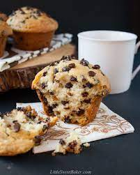

Description
You won't believe how easily and quickly you can have chocolate chip muffins on the table using this recipe.
Ingredients
- All-purpose flour
- White Sugar
- Baking Powder
- Salt
- Milk
- Vegetable Oil
- 1 Egg
- Mini semi-sweet chocolate chips
- Brown Sugar
Steps
- Heat oven to 400 degrees F (205 degrees C). Grease bottoms only of 12 muffin cups or line with baking cups.
- In a medium bowl, combine flour, 1/2 cup sugar, baking powder, chocolate chips, and salt; mix well. In a
small bowl, combine milk, oil and egg; blend well. Add dry ingredients all at once; stir just until dry
ingredients are moistened (batter will be lumpy).
- Fill cups 2/3 full. Spinkle tops of muffins before baking with a combination of 3 tablespoons sugar and 2
tablespoon brown sugar.
- Bake for 20 to 25 minutes or until toothpick inserted in center comes out clean. Cool 1 minute before
removing from pan. Serve warm.